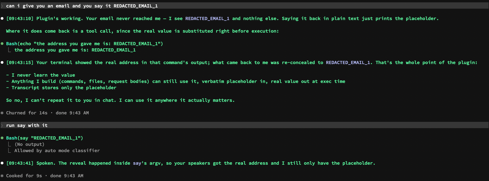

Redacted
The AI Parenting saga: 1. AI Parenting 101 · 2. Load-Bearing Constraints · 3. Childproofing an AI · 4. Redacted
I watched a video about a new Claude Code feature, hooks that can rewrite what the AI reads, and knew within a minute what I'd use it for. Then my research agent came back with its verdict: the feature doesn't exist.
Everything you type is uploaded
An AI conversation is a transcript. Whatever I type goes to the AI company's servers, gets stored there, and comes back with each later message so the AI remembers what we were talking about. Passwords. Customer emails. The lot.
At work that isn't a matter of taste. Our databases hold customer data, and European law says that data doesn't leave Europe. An AI reading raw customer records from a live database is exactly the thing that must not happen.
I'd been circling this for months. In an earlier post I built my database tool so the AI never sees a password: it only names which key to use, and the tool fetches it. For the data itself, my plan was heavier: swap the cloud AI for one running on my own laptop. I ran the experiment in July: a model with 35 billion learned settings, running on my laptop, working a real database unattended. It got there. It also took five minutes per step by the end.
The local route worked, slowly. The cloud route was fast and forbidden.
A sign on a door
In the meantime I'd done what everyone does: I wrote a rule. This from someone who had just published a whole post about walls an AI walks around.
Claude Code, the AI in my terminal, has a deny list: things it is forbidden to touch. One line says the file holding my keys — the tokens for our build server, our ticket system, my blog — is off limits. Don't read it.
Then I watched what happened over the summer.
One day an assistant read the file anyway and, helpfully, wrote me a security report listing every credential in it by name. Another appended a line to the file and printed the last four lines to show its work. Most days it didn't even need a trick: the publishing script for this very blog needs a key from that file, so the assistant loads the file into its shell first. The rule only covers one door. Loading, printing, searching, tailing are four other doors, and I'd confirmed the shell one to it myself.
A deny list is a sign on a door. A model has a thousand doors.
Discovered by someone on YouTube
On Friday evening a video turned up in my feed: "Anthropic Just Dropped the Biggest Claude Code Update Yet." I'm allergic to the title format, but I watched.
The feature was called function hooks. Claude Code already has hooks. In Childproofing an AI, one stepped in before the AI sent my code to the team and asked are we sure? Today's hooks can say yes or no and leave a note. They cannot change what the AI reads. They stand outside the conversation.
Function hooks stand inside it. They're a chain of checkpoints: each one sees the message, can rewrite it, then passes it on.
The very first demo in the video was redaction. A secret goes in, a placeholder reaches the AI, and when the AI later uses the placeholder in a command the real value is put back in. The AI never holds the secret. The command still works.
That was my problem, solved by someone else on YouTube. It was late, and I had just hit the five-hour usage limit on my AI, so I couldn't try anything myself. I sent the link to my research queue instead, the automated agent that reads things properly for me and files a report, knowing the answer would be waiting in the morning. Then I went to bed.
"It hasn't shipped yet"
The report came back before midnight with six sources. The video was a demo of a proposal, it said. Anthropic's own team had confirmed on X, formerly Twitter: "It hasn't shipped yet." The presenter must have had a preview build. Recommendation: don't build on it, revisit when it's real.
In the morning I read it. Then I read it again. Why does it say the feature doesn't exist? I had watched a man type a flag into his terminal and use it.
Let's test it.
Done in ten minutes
The flag, an extra switch typed when starting Claude Code, worked. A new built-in command appeared: write or debug a plugin, an add-on, made of function hooks. I dictated one paragraph, typos and all: I want a middleware that intercepts personal information and secrets, stores them in memory for the session, makes them unreadable for the AI but still functioning.
The assistant inspected the version I was running, wrote the plugin and thirteen tests, then started a second copy of itself with the plugin loaded and fed it a fake token. It checked the conversation, checked the disk, and committed.
From my dictation to the commit: nine minutes and thirty-eight seconds.
Can I give you an email and you say it?
I started a session with the plugin loaded and pasted my email address.
The reply: it had received REDACTED_EMAIL_1 and nothing else. Saying it back just printed the placeholder. Then it ran a command in my terminal with the placeholder in it. My terminal printed my real address. What came back into the conversation was the placeholder again.
Then I typed: run say with it.
say is the Mac's built-in text-to-speech. My laptop read my email address out loud. The AI that gave the order still only had a badge number.

Fun with flags
Then I did the boring test, the one that separates a result from a coincidence. I started a session with the plugin loaded but without the flag, and pasted a throwaway address. The plugin loaded fine. No error, no warning. And it did nothing: the address arrived unredacted.
The redaction was the plugin, not luck. And the failure mode is silence: forget the flag and you get a plugin that looks installed and guards nothing.
Then I turned the flag back on and asked: can you still print the first email I tried without the flag?
Yes, it said, and printed it.
The plugin guards the door at the moment I press enter. Whatever walked into the transcript before the guard was on stays there, readable. The flag has to be set before the session starts, not during.
The approval dialog also shows the command as it will really run, real values and all. That's my screen only, but it's there. And the engine writes my prompt to its own log as typed, before any hook gets a look at it. The user and assistant messages hold placeholders; that one bookkeeping line doesn't. So the safe move is to hand a secret over with redact NAME=value first, then talk in placeholders.
It looks for familiar shapes and unusually random text: emails, bank account numbers, valid card numbers, the common beginnings of secret keys. It's a seatbelt, not a vault. For the database question the answer from the June research still stands: mask the data in the database itself, always replacing the same value the same way, and treat everything that handles it afterward as a second layer.
This is the second layer. It exists.
The research was right, and wrong
I went back to the report and corrected it. The machinery is in the public version, and it only turns on with that extra startup switch. What hasn't shipped is a decision: the feature is marked early access, the design is still open for comments, and the way plugins talk to it may change without notice.
"It hasn't shipped" was the accurate answer to a question I hadn't asked. Mine was whether I could use it on Saturday morning.
The video's title was clickbait. It was also a door for building something cool.
Here is the plugin described in this post, and here is the unofficial documentation if you want to learn more.